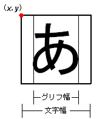

#include <nnsys/g2d/g2d_CharCanvas.h>
int NNS_G2dCharCanvasDrawChar(
const NNSG2dCharCanvas* pCC,
const NNSG2dFont* pFont,
int x,
int y,
int cl,
u16 ccode
);| pCC | [IN] Pointer to CharCanvas |
| pFont | [IN] Pointer to font |
| x | [IN] Upper-left X coordinate of text character (in CharCanvas coordinate system) |
| y | [IN] Upper-left Y coordinate of text character (in CharCanvas coordinate system) |
| cl | [IN] Standard color No. to use to draw the text character |
| ccode | [IN] The character code of the text character to draw |
The text character width (left space + glyph width) of the drawn text character. The right edge of the drawn text character is = x + [Returned value].
Draws the text character ccode to the CharCanvas pCC using the font pFont. The text character gets drawn using transparent color and the required number of sequential colors from cl. For example, if the font is 3bpp (23=8 color) and 5 is specified for cl, then the total number of colors used to draw the text character = the transparent color (color No. 0) and the color Nos.
The coordinates are expressed in the CharCanvas coordinate system, where the upper-left corner of CharCanvas is (0,0).
x and y must satisfy these inequalities: [text-character glyph width] < x < [CharCanvas region width] - [text-character's left space width]
[font height] < y < [CharCanvas region height]
The text character is drawn so that the (x, y) coordinates are positioned at the red dot in the figure below.
05/25/2005 Initial version.